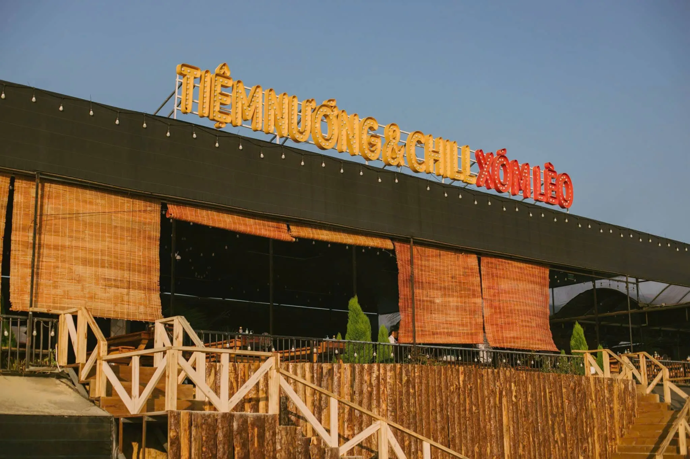
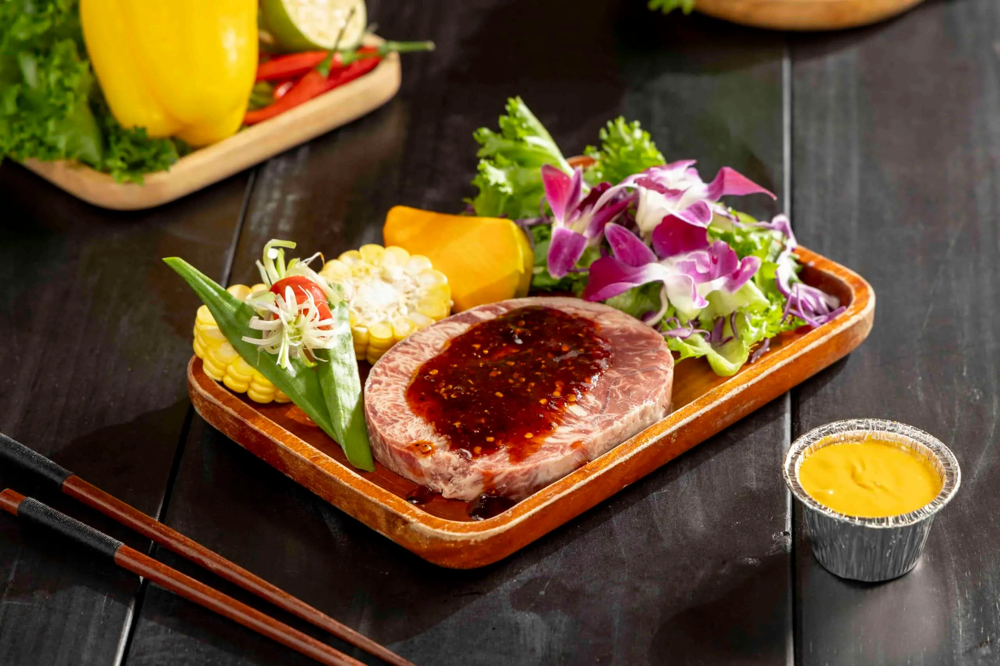
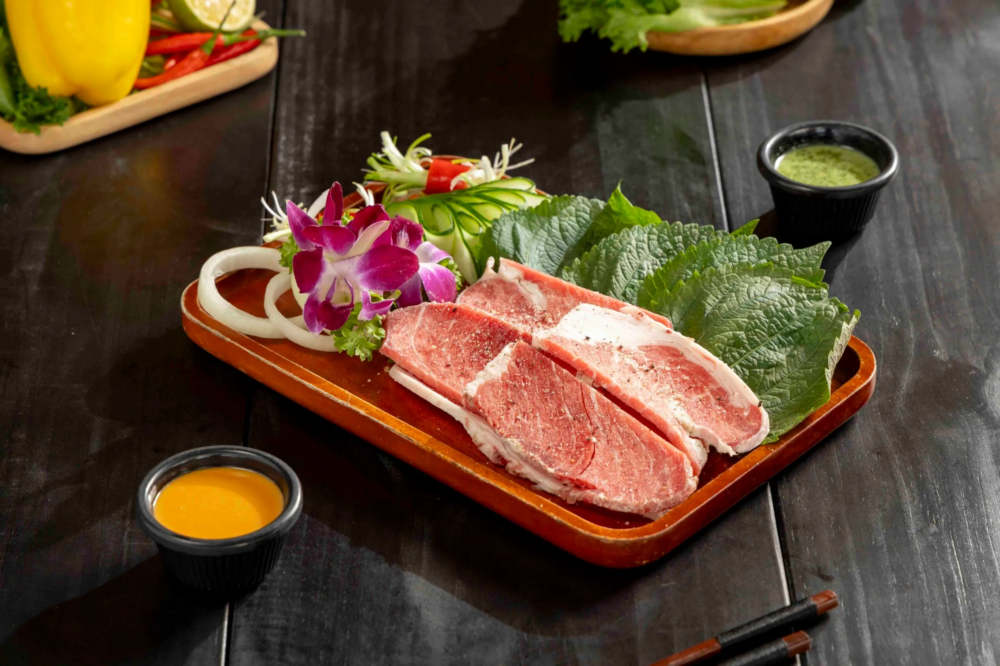
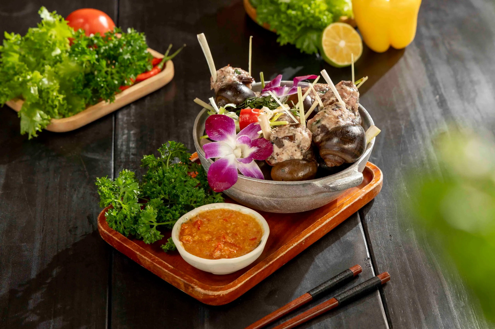
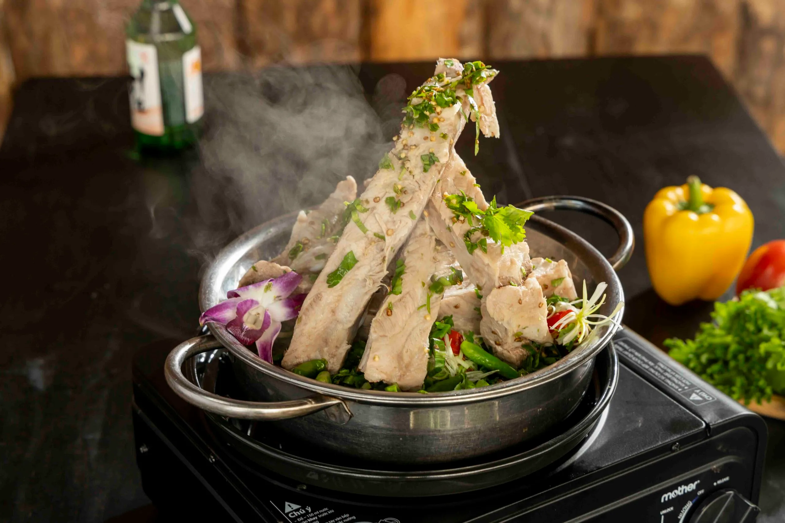
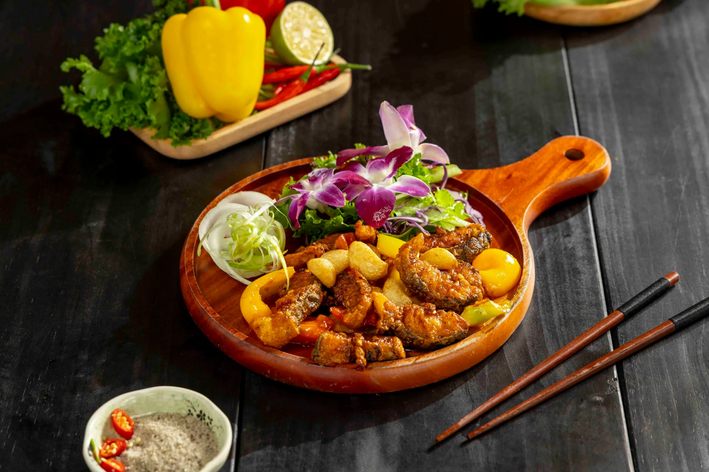
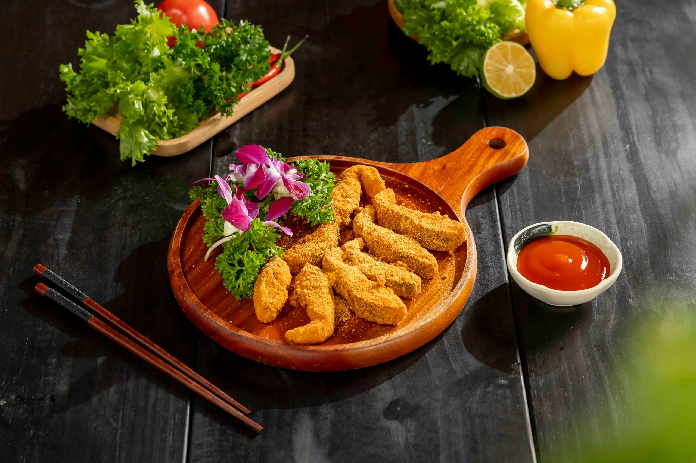
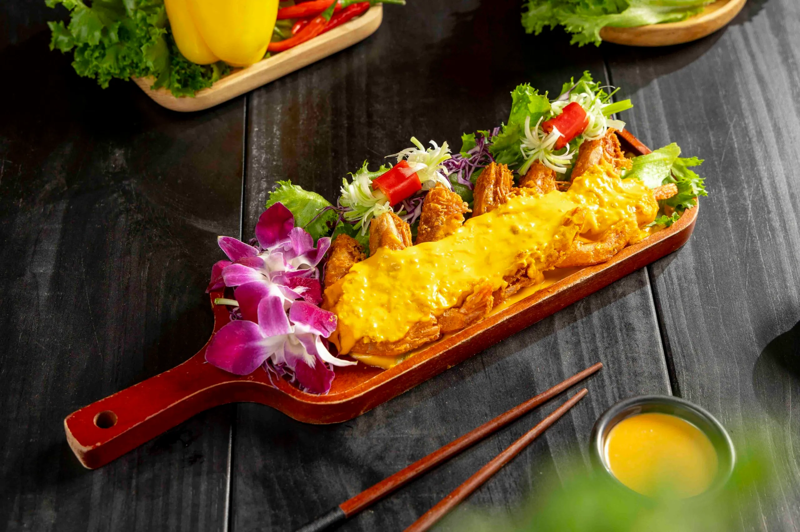

Tiệm nướng Đà Lạt được yêu thích, nơi lý tưởng để chill

Mục lục bài viết
- 1. Bò Tảng Nướng Phô Mai Trứng Muối – Đặc sản hút khách tại tiệm nướng Đà Lạt – Tiệm Nướng & Chill Xóm Lèo
- 2. Ba Chỉ Bò Cuộn Kim Châm – món nướng hấp dẫn tại Tiệm Nướng & Chill Xóm Lèo, tiệm nướng Đà Lạt nổi tiếng với hương vị hòa quyện hoàn hảo giữa thịt và rau.
- 3. Ba Chỉ Bò Nướng Muối Tiêu – Món hấp dẫn mang hương vị truyền thống tại tiệm nướng Đà Lạt – Tiệm Nướng & Chill Xóm Lèo
- 4. Ốc Nhồi Thịt – Món ăn truyền thống trong không gian chill tại một tiệm nướng Đà Lạt yêu thích nhất
- 5. Sườn Cay Thái Lan – Hương vị mới cho buổi tối ấm áp tại tiệm nướng Đà Lạt
- 6. Cá Tầm Lúc Lắc – Đặc sản lạ miệng, đậm đà khó quên tại tiệm nướng Đà Lạt – Tiệm Nướng & Chill Xóm Lèo
- 7. Cá Tầm Rang Muối – Món ngon lạ miệng đặc biệt tại Tiệm Nướng & Chill Xóm Lèo (tiệm nướng Đà Lạt)
- 8. Tôm Chiên Trứng Muối – Món ăn “gây nghiện” ở Tiệm Nướng & Chill Xóm Lèo
Tiệm Nướng & Chill Xóm Lèo – Tiệm nướng Đà Lạt nổi tiếng không chỉ bởi khí hậu mát mẻ, cảnh sắc thơ mộng của thành phố ngàn hoa mà còn là thiên đường ẩm thực hấp dẫn dành cho những tín đồ yêu thích món nướng. Giữa lòng Đà Lạt, Tiệm Nướng & Chill Xóm Lèo đã nhanh chóng trở thành điểm đến quen thuộc của người dân địa phương cũng như khách du lịch bởi sự kết hợp hài hòa giữa món ăn ngon, không gian chill đậm chất Đà Lạt và phong cách phục vụ tận tình, chuyên nghiệp.

1. Bò Tảng Nướng Phô Mai Trứng Muối – Đặc sản hút khách tại tiệm nướng Đà Lạt – Tiệm Nướng & Chill Xóm Lèo

Đây là một trong những món ăn được yêu thích nhất tại Tiệm Nướng & Chill Xóm Lèo. Những miếng bò tảng dày, nướng vừa tới để giữ trọn vị ngọt tự nhiên của thịt, được phủ một lớp phô mai béo ngậy cùng sốt trứng muối thơm lừng. Khi thưởng thức, bạn sẽ cảm nhận được sự hòa quyện tinh tế giữa vị ngọt mềm của thịt bò và vị béo mặn đặc trưng của phô mai trứng muối, tạo nên một trải nghiệm ẩm thực khó quên. Món ăn này rất thích hợp cho những buổi tụ tập bạn bè hoặc gia đình vào buổi tối se lạnh của Đà Lạt.
2. Ba Chỉ Bò Cuộn Kim Châm – món nướng hấp dẫn tại Tiệm Nướng & Chill Xóm Lèo, tiệm nướng Đà Lạt nổi tiếng với hương vị hòa quyện hoàn hảo giữa thịt và rau.

Sự kết hợp hoàn hảo giữa miếng ba chỉ bò mềm mại, đậm đà và nấm kim châm giòn ngọt đã tạo nên món ba chỉ bò cuộn kim châm đặc sắc tại Tiệm Nướng & Chill Xóm Lèo. Khi được nướng trên than hồng, mùi thơm của thịt và nấm lan tỏa, khiến ai cũng khó lòng cưỡng lại. Đây cũng là lựa chọn tuyệt vời cho những ai yêu thích sự cân bằng giữa thịt và rau, vừa giữ dáng vừa thưởng thức món ngon.
3. Ba Chỉ Bò Nướng Muối Tiêu – Món hấp dẫn mang hương vị truyền thống tại tiệm nướng Đà Lạt – Tiệm Nướng & Chill Xóm Lèo

Đối với những tín đồ ẩm thực truyền thống, ba chỉ bò nướng muối tiêu chính là món ăn không thể bỏ qua. Thịt bò được tẩm ướp kỹ càng với muối tiêu, khi nướng trên than hoa cho ra mùi thơm quyến rũ cùng vị mặn, cay nhẹ rất vừa miệng. Món này rất thích hợp cho những buổi tối ấm áp tại Tiệm Nướng & Chill Xóm Lèo, giúp bạn tận hưởng hương vị truyền thống giữa không gian chill đặc trưng của Đà Lạt.
4. Ốc Nhồi Thịt – Món ăn truyền thống trong không gian chill tại một tiệm nướng Đà Lạt yêu thích nhất

Ốc nhồi thịt là một trong những món ăn truyền thống đậm đà hương vị Việt được chế biến cầu kỳ tại Tiệm Nướng & Chill Xóm Lèo. Ốc được chọn lựa tươi ngon, nhồi thịt vừa ăn rồi đem hấm kỹ càng, chấm cùng nước mắm gừng thơm nồng. Hương vị thơm ngon, đậm đà của món ăn chắc chắn sẽ khiến bạn nhớ mãi.
5. Sườn Cay Thái Lan – Hương vị mới cho buổi tối ấm áp tại tiệm nướng Đà Lạt

Lấy cảm hứng từ ẩm thực xứ chùa vàng, món sườn cay Thái Lan tại Tiệm Nướng & Chill Xóm Lèo đem lại trải nghiệm mới lạ với vị cay nồng đặc trưng. Sườn được ướp đậm đà, nướng vừa chín tới, ăn kèm rau sống và nước sốt Thái chua ngọt, tạo nên sự hài hòa trong từng miếng ăn. Đây là món ăn khiến nhiều thực khách nhớ mãi sau khi rời Đà Lạt.
6. Cá Tầm Lúc Lắc – Đặc sản lạ miệng, đậm đà khó quên tại tiệm nướng Đà Lạt – Tiệm Nướng & Chill Xóm Lèo

7. Cá Tầm Rang Muối – Món ngon lạ miệng đặc biệt tại Tiệm Nướng & Chill Xóm Lèo (tiệm nướng Đà Lạt)

8. Tôm Chiên Trứng Muối – Món ăn “gây nghiện” ở Tiệm Nướng & Chill Xóm Lèo

✅ Vì sao nên chọn Tiệm Nướng & Chill Xóm Lèo – Tiệm nướng Đà Lạt chill, view đẹp, đồ ăn ngon
Không gian chill, view đẹp
Tiệm có không gian mở, thoáng đãng với cách bài trí giản dị nhưng ấm cúng, tạo cảm giác dễ chịu, thích hợp cho các buổi tụ tập bạn bè hay gia đình. Âm nhạc nhẹ nhàng cùng không khí se lạnh của Đà Lạt càng làm tăng trải nghiệm chill khó quên. Đây cũng là nơi lý tưởng để bạn vừa thưởng thức món ngon vừa trò chuyện, thư giãn.

Nguyên liệu tươi ngon, đảm bảo vệ sinh
Tất cả nguyên liệu tại Tiệm Nướng & Chill Xóm Lèo đều được chọn lựa kỹ lưỡng, đảm bảo tươi sạch và chất lượng cao. Tiệm luôn tuân thủ nghiêm ngặt quy trình chế biến an toàn vệ sinh thực phẩm, giúp thực khách yên tâm khi thưởng thức món ăn.
Phục vụ tận tình, chu đáo
Đội ngũ nhân viên thân thiện, nhiệt tình tại Tiệm Nướng & Chill Xóm Lèo luôn sẵn sàng hỗ trợ và chăm sóc khách hàng chu đáo. Dù bạn là khách quen hay lần đầu ghé thăm, bạn đều sẽ cảm nhận được sự chuyên nghiệp và tận tâm trong cách phục vụ.
Giá cả hợp lý
Mức giá tại Tiệm Nướng & Chill Xóm Lèo rất hợp lý, phù hợp với nhiều đối tượng khách hàng. Bạn có thể thoải mái thưởng thức các món ngon mà không lo về giá, đồng thời nhận được trải nghiệm chất lượng cao.
Khu vực check-in & view ngắm hoàng hôn “có 1-0-2” tại Đà Lạt
Đến với Tiệm Nướng & Chill Xóm Lèo, bạn không chỉ được thưởng thức những món nướng thơm ngon mà còn tận hưởng không gian chill hiếm có giữa lòng Đà Lạt. Tiệm sở hữu view ngắm hoàng hôn tuyệt đẹp, nơi bầu trời chuyển sắc cam tím buông xuống thung lũng nhà lồng lung linh về đêm, tạo nên khung cảnh lãng mạn khó quên.
Đặc biệt, bạn còn có thể vừa thưởng thức đồ nướng nóng hổi, vừa chill nhẹ và săn khoảnh khắc đoàn tàu lửa chạy ngang qua – một trải nghiệm độc đáo không nơi nào có. Với hàng loạt góc check-in cực xịn sò, Tiệm Nướng & Chill Xóm Lèo không chỉ là tiệm nướng Đà Lạt nổi tiếng mà còn là địa điểm lý tưởng để lưu giữ những khoảnh khắc đáng nhớ cùng bạn bè và người thân.
Đặc biệt trang trí bàn miễn phí
Đặc biệt tại Tiệm Nướng & Chill Xóm Lèo, bạn sẽ được trang trí bàn miễn phí theo yêu cầu, tạo không gian ấm cúng và riêng biệt cho mọi dịp tụ họp. Dù là sinh nhật, kỷ niệm hay buổi gặp mặt thân mật, tiệm luôn sẵn sàng giúp bạn thiết kế bàn tiệc đẹp mắt, mang đến trải nghiệm trọn vẹn và đáng nhớ bên bạn bè, người thân.

📍 Địa chỉ: 113 Huỳnh Tấn Phát, Phường 11, Đà Lạt, Lâm Đồng
📞 Hotline: 076.45.27.336 | 08.99.42.84.34 | 0902.91.22.40
🌐 Đặt Bàn: Tại Đây
📍 Chỉ Đường: Chỉ Đường
Tiệm Nướng & Chill Xóm Lèo không chỉ là tiệm nướng Đà Lạt đơn thuần mà còn là điểm hẹn văn hóa ẩm thực, nơi bạn có thể thưởng thức những món nướng chuẩn vị cùng bạn bè, gia đình trong không gian thoải mái, chill đúng chất Đà Lạt. Nếu bạn đang tìm kiếm một địa điểm để thưởng thức ẩm thực nướng ngon, không gian đẹp và phục vụ tận tình, Tiệm Nướng & Chill Xóm Lèo chính là lựa chọn không thể bỏ qua khi đến thành phố sương mù. Đừng quên ghé qua để tận hưởng những khoảnh khắc ấm áp và hương vị tuyệt vời nhất!